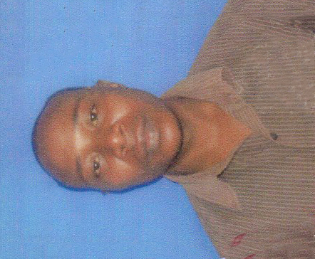
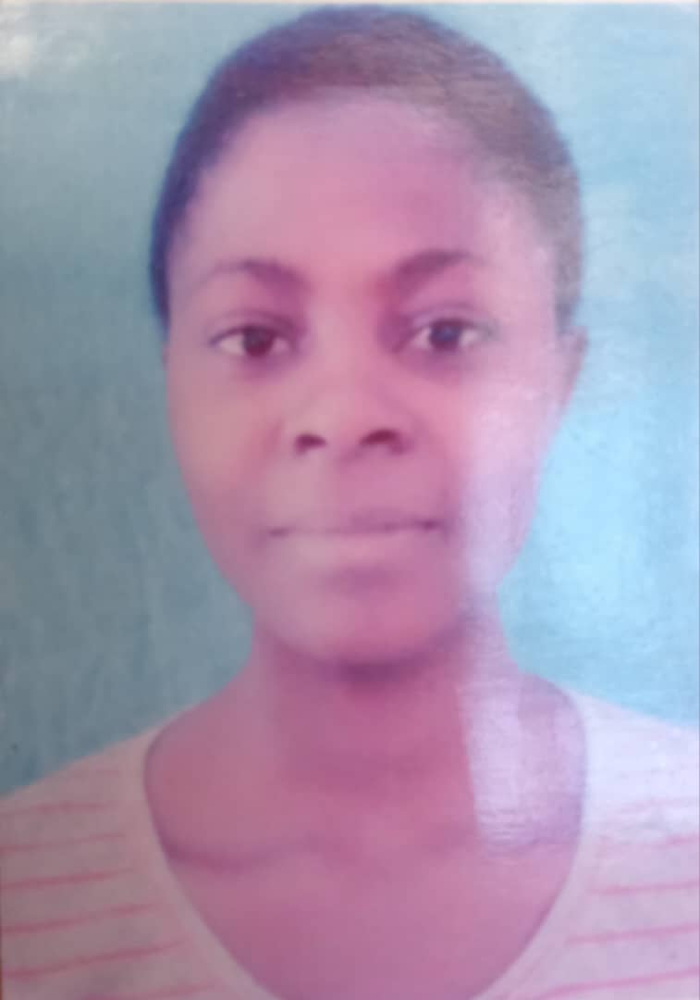
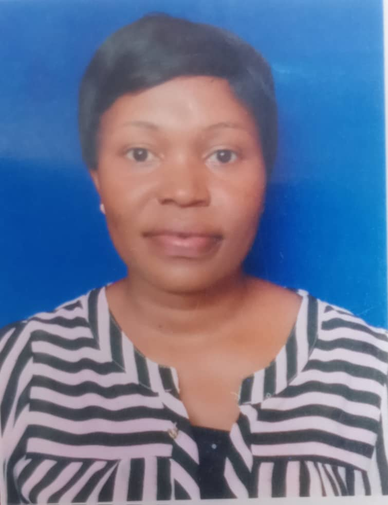
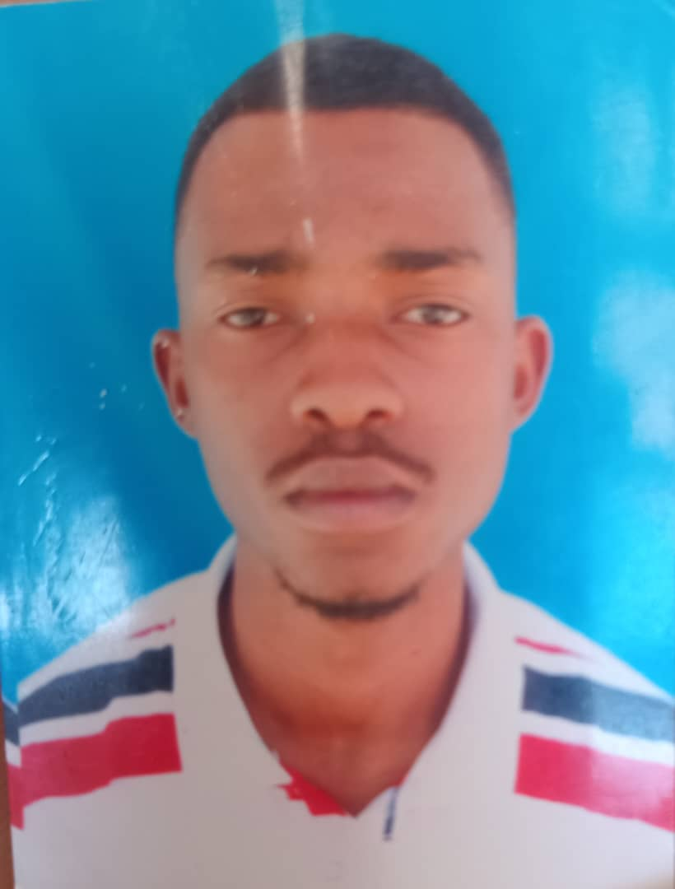
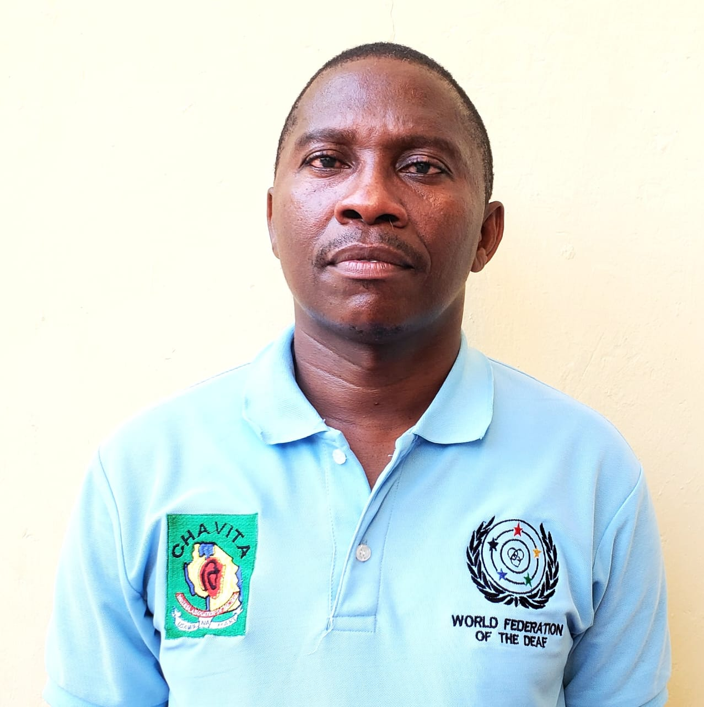

Meet Our Team
The management structure of TATA organization is built with democratic leadership, where board members are part of the Organization leaders.

Yohana Charles Sekimweri
Chairperson / Director
Founding member with extensive experience in community development and organizational leadership.

Juma Ally Rashid
Executive Secretary
Experienced administrator overseeing organizational operations and strategic planning.

Cesilia Elias
Organization Accountant
Manages financial operations, budgeting, and ensures financial accountability and transparency.

Rehema Abdala Mbwego
Road Safety & Good Governance Coordinator
Leads initiatives on road safety awareness and good governance practices in communities.

George Hizza
Education Coordinator
Coordinates educational programs and initiatives to improve access to quality education.

Samsoni Neshilio Katamboi
Health & Environmental Coordinator
Leads health promotion and environmental protection programs in communities.

David
Organization Coordinator
Representing people with disabilities, advocating for inclusive development and accessibility. Member of the World Federation of the Deaf, championing the rights and empowerment of persons with disabilities in Tanzania.
Representing People with Disabilities
David Chavit serves as the Organization Coordinator, bringing valuable experience and advocacy for persons with disabilities. His role ensures that:
- People with disabilities have a voice in organizational decisions
- Programs are inclusive and accessible to all
- The rights of persons with disabilities are upheld
- International best practices are incorporated through WFD membership
- Sign language and deaf culture are respected and promoted
Organizational Structure
Under the current leadership, the organization is supported by sectoral committees in Education, Health and Environment, Agriculture, Road Safety, and Good Governance.
The Board comprises both founding and appointed members. Its responsibilities include:
- Proposing candidates for vacant positions
- Reviewing contracts and making key organizational decisions
- Receiving and approving the budget
- Providing guidance to the management unit on implementation and oversight